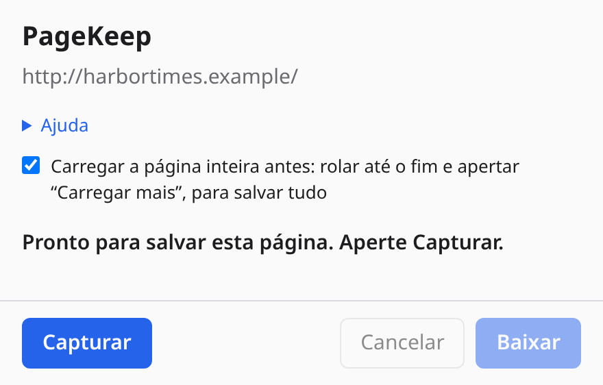
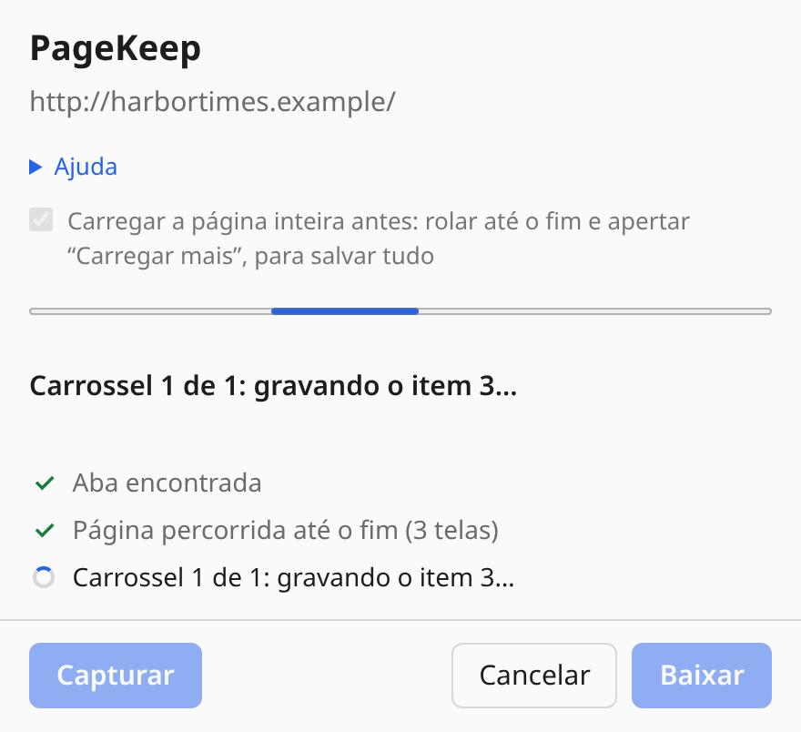
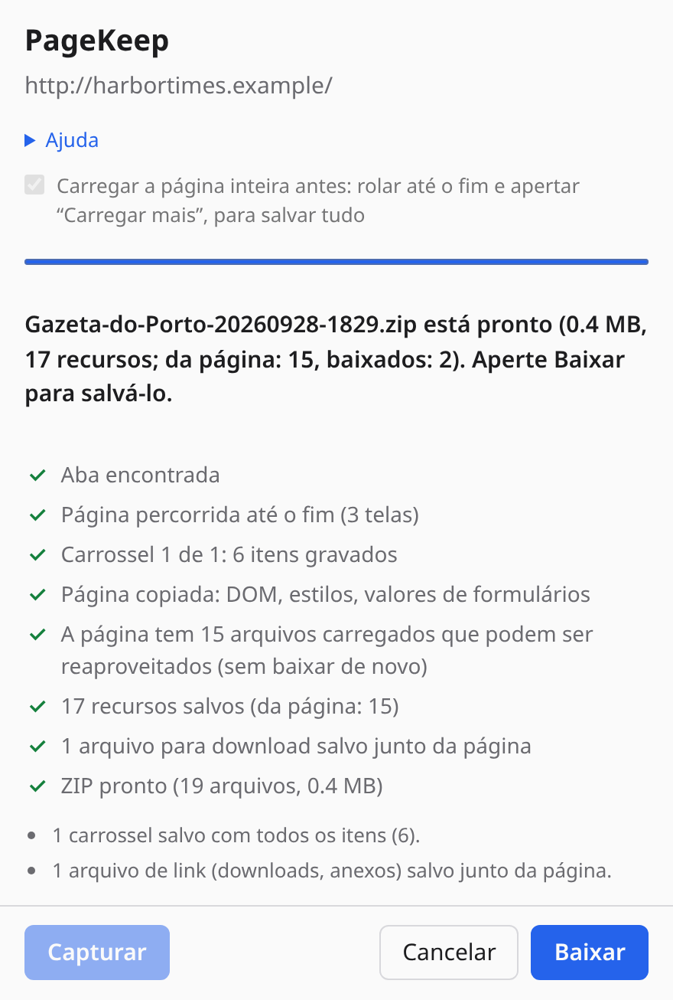
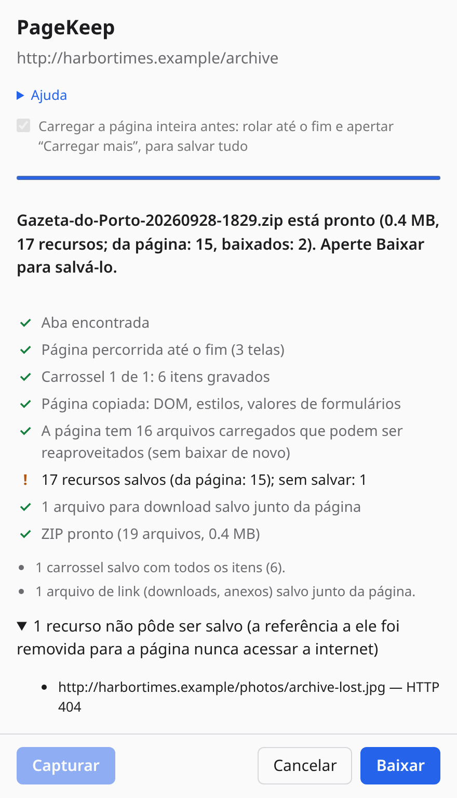
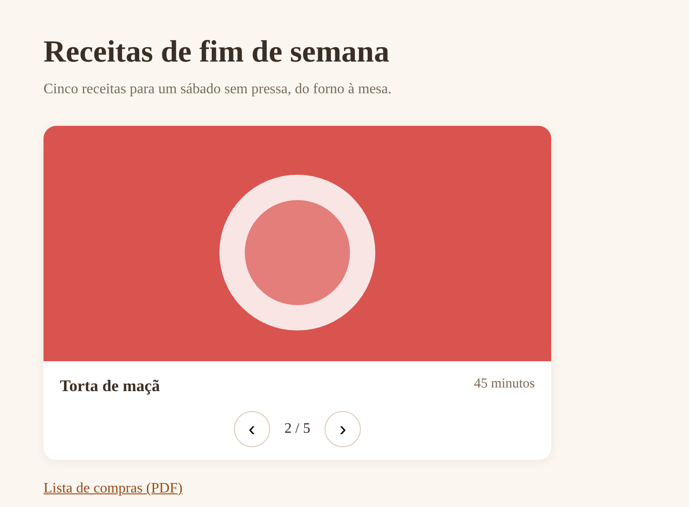

Começo rápido
- Abra a página que você quer guardar e deixe-a como quer que ela seja salva: rolada, com as seções abertas, com um formulário preenchido.
- Clique no ícone do PageKeep na barra de ferramentas ou aperte Alt+Shift+S. O popup abre embaixo do ícone; nada começa ainda. Aperte Capturar (ou Enter).
- Acompanhe: uma linha por etapa, com um indicador girando que vira um sinal de ✓. Numa página com carrossel, você vê cada item sendo gravado.
- Quando estiver pronto, aperte Baixar: o ZIP vai para a sua pasta de Downloads, com o
título da página, a data e a hora no nome, por exemplo
Gazeta-do-Porto-20260927-1015.zip, e o popup fica pronto para a próxima captura. Cancelar descarta o resultado.


Durante a captura
- Carregar a página inteira antes (opção no popup, ligada a menos que você desligue): antes de salvar, o PageKeep rola a página até o fim e aperta os botões "Carregar mais", para salvar também as imagens e listas que só aparecem assim, e depois volta para onde você estava. Ele nunca segue um link para outra página nem envia um formulário. Feeds infinitos param em 40 telas ou 20 segundos. Ajuste antes de apertar Capturar; a escolha fica guardada.
- Você pode fechar o popup ou clicar na página: a captura continua em segundo plano. Clique no ícone de novo para ver como está.
- O selo do ícone mostra … enquanto roda, ✓ quando termina e ! se falhou, para você saber sem abrir o popup.
- Cancelar interrompe a captura: os carrosséis voltam ao primeiro item e nada é salvo.
- O navegador mostra uma barra dizendo que a extensão começou a depurá-lo. O PageKeep usa o depurador do navegador para ler os arquivos que a página já carregou, exatamente os que você viu, e para baixar os poucos que ela não tinha carregado; a barra some quando a captura termina.
- Uma captura por vez. Se você abrir o popup em outra aba enquanto uma captura roda, ele mostra essa captura.
- Deixe a janela do navegador aberta (não minimizada) até o fim: o navegador deixa lenta a página de uma janela minimizada, e os carrosséis passam a demorar muito mais.
O resultado
Quando a captura termina, nada foi salvo ainda: o popup guarda o resultado até você apertar Baixar ou Cancelar, mesmo se você o fechar ou abrir em outra aba:
- o nome do arquivo, o tamanho e quantos arquivos ele tem (quantos foram lidos da página e quantos foram baixados);
- observações sobre o que precisou de cuidado especial: carrosséis salvos com todos os itens, editores de código salvos como texto, arquivos para download salvos junto da página;
- Baixar salva o ZIP na sua pasta de Downloads e deixa o popup pronto para a próxima captura;
- Cancelar descarta o resultado sem salvar nada.
A seção Ajuda do popup resume isso, com um link para esta página.

O que é salvo
- A página como está na tela agora, e não como o servidor a enviou: o conteúdo que os scripts acrescentaram, as seções que você abriu, os valores atuais dos formulários (campos de senha ficam sempre vazios) e os canvases, salvos como imagens.
- Os arquivos dela: folhas de estilo (e o que elas importam), imagens em todos os tamanhos que a página oferece, fontes, ícones, capas de vídeo e arquivos pequenos de áudio ou vídeo.
- Carrosséis com botões "Próximo" e "Anterior": o PageKeep percorre cada item (desde o primeiro, mesmo que o carrossel estivesse em outro), devolve a página para onde estava, e a cópia salva abre no mesmo item, com os botões funcionando. Vale para os carrosséis que mostram um item por vez e para os que deslizam uma faixa de itens para o lado.
- Seções recolhíveis, acordeões, abas, menus suspensos, janelas sobrepostas (modais e diálogos) e botões "Expandir tudo" continuam funcionando na cópia salva, graças a pequenos scripts guardados nela que nunca acessam a internet.
- Galerias de fotos cujas miniaturas abrem uma foto maior: as fotos grandes são salvas, e um clique na miniatura a abre sobre a página, com anterior / próxima e fechar, como no site.
- Editores de código (como o do VS Code) viram texto comum, que dá para rolar e selecionar, com o arquivo completo quando a página tem um link para ele.
- Arquivos oferecidos para download (anexos, PDFs, arquivos compactados do mesmo site), até 25, salvos junto da página para que os links funcionem offline.
- Textos cortados com "…mais" aparecem inteiros.
O que não é salvo
- Quadros (iframes) de outros sites, como anúncios, players de vídeo e mapas incorporados, não podem ser lidos; a cópia mostra uma imagem de como cada um aparecia, no mesmo lugar, que não toca nem responde a cliques. Os invisíveis (rastreamento) são removidos.
- Arquivos acima de 30 MB, e o que passar de 800 MB no total.
- Páginas do navegador, como as
chrome://, e a loja de extensões: o navegador não deixa extensões lerem essas páginas.
O que não pôde ser salvo aparece listado no popup, e a referência a ele é removida da cópia em vez de apontar para o site ao vivo, para que a cópia nunca acesse a internet. Se um arquivo falhou só por um motivo passageiro (tempo esgotado), capture a página de novo.

Abrindo o ZIP
Descompacte onde quiser e abra o index.html no navegador, com ou sem internet:
index.html a página, apontando para os arquivos em assets/ assets/ estilos, imagens, fontes, ícones e downloads salvos snapshot.json endereço e título da página, a data, cada arquivo salvo e cada um que falhou
Abrir a cópia não faz nenhuma requisição. Os links continuam levando ao site real quando você clica neles com internet.

Problemas
- "O navegador não permite ler esta página": é uma página do navegador (
chrome://, a loja de extensões, a página de outra extensão). Essas não podem ser salvas. - "Não foi possível ler os arquivos carregados pela página": o depurador do navegador não conseguiu se conectar à aba. A captura continua, mas só os arquivos do próprio site da página podem ser salvos; feche as ferramentas de desenvolvedor ou outras extensões de depuração nessa aba e tente de novo.
- O popup mostra a captura de outra página: é uma captura por vez. Espere terminar ou aperte Cancelar, e depois clique no ícone na sua aba.
- Um carrossel não foi gravado: o PageKeep reconhece carrosséis pelo rótulo dos botões de seta no código da página: "Próximo" / "Anterior", ou o mesmo em inglês ("Next", "Previous") ou espanhol ("Siguiente", "Anterior"), sozinhos ou com o que movem ("Próxima imagem", "Next slide"). Os outros carrosséis são salvos no item que estava aparecendo. Botões que enviam um formulário nunca são apertados.
Privacidade
O PageKeep lê uma página só quando você clica no ícone dele naquela aba, e só enquanto a captura roda. O que ele lê vai apenas para o ZIP salvo no seu computador. Nada é enviado ao desenvolvedor nem a ninguém: não há conta, servidor nem estatísticas de uso. As únicas requisições que ele faz são para os arquivos da própria página, aos servidores que essa página já usa.